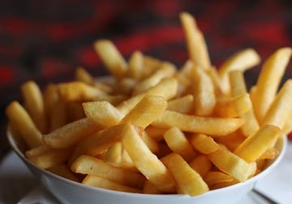
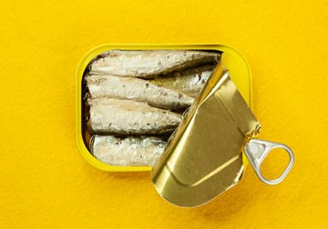
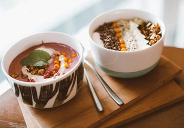
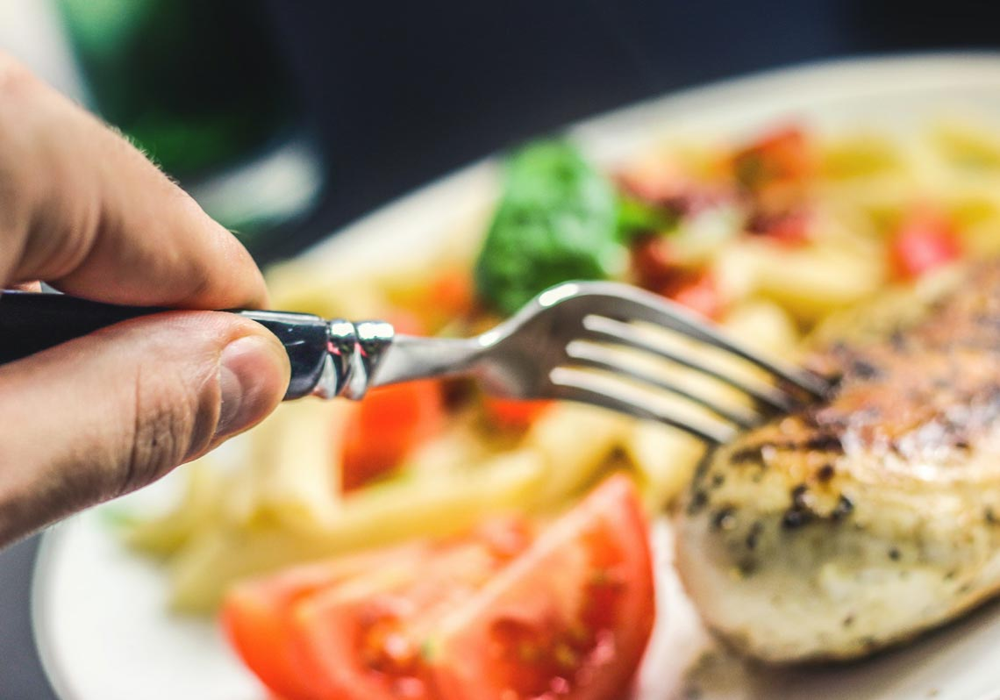
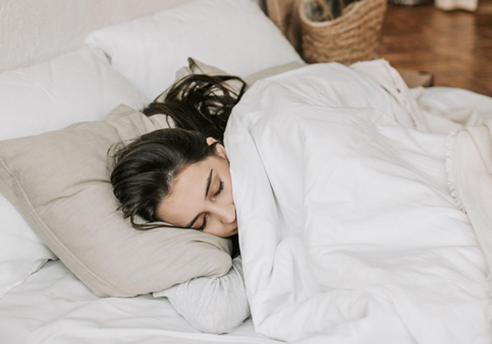

說到減肥這個話題，小編第一個就要報名，曾經走錯過很多條路，那個時候有一陣子非常地紅，就是每天只是吃一顆蘋果，然後就喝水，真的就瘦了4公斤。因為一個禮拜了也差不多了， 總是會覺得受不了，就開始又回復正常地吃，才4天，就又胖了5公斤。然後有一個很大的問題就是開始便秘，最後無奈去看醫生，這一段辛酸經歷到現在都刻骨銘心...
今天有五個網絡討論度很高的減肥方法分享給大家，一起來看看吧。
TOP1：「962飲食法」、「66飲食法」
很多人可鞥都只聽說過「168」，沒有聽說過「962」、「66」。其實呢，這是女明星的減肥法。
66飲食法
是許瑋甯使用過的減肥法，她光是用「66減肥法」，她就瘦了大概十公斤左右，那這個「66」代表什麼意思呢？
第一個就是每一餐只吃六分飽，六分飽其實對於大部分人來說比較的難，因為要意志力克制住；
第二個即使最後一餐就是在晚間六點結束，所以叫「66飲食法」。一般來說如果肚子餓的話就多喝水，多喝黑咖啡。
另外「66飲食法」需要補充的其實還有三個東西是不能碰的。

不碰油炸食品

不碰加工食品

不碰冰冷食物
962飲食法
這是女神張鈞甯的減肥方式，「9」代表早餐要遲到9分飽、中餐吃到6分飽、晚餐吃到2分飽或者不吃。第一餐早餐一般以瘦肉、蔬果還有無糖優格or黑咖啡，午餐也很清淡包括五穀雜糧、魚、蔬菜，到晚上的時候就不吃澱粉，蔬果汁幫助腸胃的蠕動，但是以現在年輕人的生活節奏，常常晚上需要應酬，晚上可能吃的比較多，第二天早上不會那麼餓，所以 大家參考時候沒有一定要求早餐晚餐，因人而異，一天的總熱量才是重點！
TOP2：當168停滯期，「詐騙飲食法」助改善
很多人會奇怪「詐騙飲食法」是什麼呢？其實健身的人會知道所謂的詐騙餐會讓我們的身體荷爾蒙有所調整，適時地變換進食量，才能長久維持飲食控制，一週六天的話可以做「168」，有一天可以自由去吃，這樣的飲食方法也是幫助大家來長久地維持下去。
TOP3：52斷食、隔日斷食，那個更適合我？

斷食主要分為兩大類：52斷食和隔日斷食。斷食也並不是什麼都不吃，又叫做輕斷食，女生大概一天的總熱量吃五百大卡，男生大概吃600大卡，52斷食一個禮拜可以選2天斷食，隔日斷食就是一天正常一天斷食。可以選擇連續但最好不要連續，斷食日以每天兩餐為原則，分配成午餐和晚餐。早餐容易讓人胃口大開，早餐是容易忽略的一餐，其次自然延長斷食時間，讓脂肪燃燒更多。斷食期間只吃優質蛋白質、蔬菜、低升糖水果，喝白開水、無糖綠茶或黑咖啡（優質蛋白質：豆、魚、肉（白肉）、蛋、奶）
TOP4：「422减肥法」免挨饿吃到饱，无痛月瘦4公斤？
「422施肥法」可以理解為168的升級版，代表第一餐跟第二餐中間要隔4個小時，第二個4代表第二餐跟第三餐隔4個小時，第三個2代表第三餐吃的食物最好是清淡一點，在兩個小時之內把它消化完，可以選擇比較容易消化的分子比較小的食物，相比之下442確保每一餐都有進食，所以說不適合168的可以試一試442「減肥法」。
TOP5：日本職業運動員推薦的「空腹睡眠減肥法」

影響睡眠的主要有三種激素：一個是褪黑激素，一個是瘦素，還有一個是生長激素，睡眠不好，瘦素就會降低，然後代謝就會變差，而生長激素就是負責代謝，褪黑激素和棕色脂肪很有關係，它可以幫助你燃燒熱量。而空腹的血糖從哪裡來呢？就是從燃燒肝醣跟燃燒脂肪。大家肯定有疑問空腹睡眠肯定會餓，這樣大概率會失敗的，解決方法也是有的，答案就是不吃含糖的食物，可以選擇一杯牛奶、起司這樣的含蛋白質的食物
今天和大家分享了這麼多減重方法，不過每個人要根據自己的需求和狀態去做，相信大家一定可以做到成功減重！